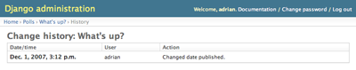
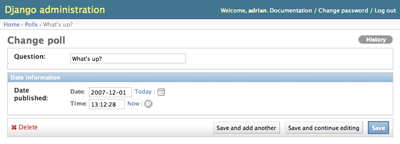
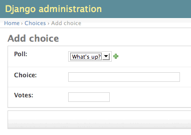
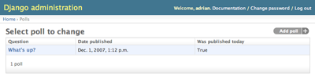

はじめての Django アプリ作成、その 2¶
| revision-up-to: | 8961 (1.0) |
|---|
このチュートリアルは チュートリアルその 1 の続き です。ここでは、引続き Web 投票アプリケーションの開発を例にして、Django が 自動生成する管理サイト (admin) を中心に解説します。
設計哲学
コンテンツの追加や変更、削除を行うためのスタッフや顧客向けの管理サイト 構築は、創造性の欠けた退屈なものです。そこで、 Django ではモデルを管 理するための admin インタフェースを完全に自動化しています。
Django はニュースルーム環境で開発されました。ニュースルーム環境では、 「コンテンツの作成者 (content publisher)用」と「公開用 (public) 」サイ トをきわめて明確に区別しています。サイト管理者は新たな話題やイベント、 スポーツのスコアなどの入力に使い、コンテンツは公開用サイト上で表示され ます。 Django は、サイト管理者向けの一元化されたコンテンツ編集インタフェー スの提供という問題を解決しているのです。
admin は一般のサイトを訪問者に使ってもらうためのものではなく、サイト管 理者のためのものなのです。
admin サイトの有効化¶
デフォルトでは、 Django の管理サイトは無効化されていて、自分で選択して有効 にせねばなりません。 admin を有効にするには、以下の 3 つの作業が必要です:
INSTALLED_APPS 設定に "django.contrib.admin" を追加し ます。
python manage.py syncdb を実行します。新たなアプリケーションを INSTALLED_APPS に追加したので、データベースを更新せねばな りません。
mysite/urls.py ファイルを編集し、 “Uncomment this for admin:” と 書かれた行の次の行のコメントアウトを解除します。このファイルは URLconf といいます。 URLconf についてはチュートリアルの次の部で解説し ます。今はただ、この設定が URL をアプリケーションに対応づけていること だけを覚えておきましょう。最終的に、 urls.py は以下のようになるは ずです:
from django.conf.urls.defaults import * # Uncomment the next two lines to enable the admin: from django.contrib import admin admin.autodiscover() urlpatterns = patterns('', # Example: # (r'^mysite/', include('mysite.foo.urls')), # Uncomment the admin/doc line below and add 'django.contrib.admindocs' # to INSTALLED_APPS to enable admin documentation: # (r'^admin/doc/', include('django.contrib.admindocs.urls')), # Uncomment the next line to enable the admin: (r'^admin/(.*)', admin.site.root), )(太字の行はコメントを外した部分です)
開発サーバの起動¶
開発用サーバを起動して、管理サイトを探検してみましょう。
チュートリアルその 1 で、開発サーバを以下のように起動したのを思い出してくだ さい:
python manage.py runserver
次はブラウザを起動して、ローカルドメインの "/admin/" 、つまり http://127.0.0.1:8000/admin/ にアクセスします。以下のような admin のログイ ン画面が表示されるはずです:

管理サイトに入る¶
さあログインしてみましょう。(チュートリアルその 1 で、スーパユーザのアカウ ントを作成したはずです。覚えていますか?) ログインしたら、管理サイトのインデ クスページが表示されるはずです:

他にも、「グループ (Groups)」や「ユーザ (Users)」、「サイト (Sites)」といっ た編集可能なコンテンツが表示されるはずです。これらはデフォルトで Django に付属しているコアの機能です。
Poll モデルを admin 上で編集できるようにする¶
ところで、 polls アプリケーションはどこにあるんでしょう？ admin のインデ クスページを見ても表示されていませんね。
実は、まだ一つやるべきことが残っていました。 admin に Poll モデルがイ ンタフェースを持つことを教える必要があるのです。 mysite/polls/models.py ファイルを編集して、末尾に以下のような一文を加えてください:
from django.contrib import admin
admin.site.register(Poll)
admin のページをリロードして、どんな変化が起きたか見てみましょう。 開発サーバはプロジェクトを自動的にリロードしてくれるので、コードに加えた変 更はただちにブラウザで確認できます。
admin の機能を探究してみる¶
Poll モデルを登録したので、 Django は Poll を管理サイトに表示するよ うになりました:

「Polls」 をクリックしてみてください。 変更リスト (change list) のページ に入ります。このページはデータベース上の全ての Poll オブジェクトを表示 し、オブジェクトを選択して変更できるようになっています。前のチュートリアル で作成した 「What's up」という Poll オブジェクトがありますね。

「What's up?」をクリックして編集してみましょう:

以下の点に注意してください:
- フォームは Poll モデルをもとに自動的に生成されています。
- モデルのフィールドの型によって ( DateTimeField, CharField などの) 適切な HTML 入力ウィジェッ トが対応しています。各タイプのフィールドには、 Django 管理サイトでデー タを表示する方法が定義されています。
- DateTimeField には JavaScript のショートカッ トがついています。日付 (Date) のカラムには「今日 (Today)」へのショート カットと、カレンダーのポップアップボタンがあります。時刻 (Time) のカラ ムには「現在 (Now)」へのショートカットと、よく入力される時間のリストを 表示するポップアップボタンがあります。
ページの末尾の部分には操作ボタンがいくつか表示されています:
- 保存 (Save) -- 変更を保存して、このモデルの変更リストのページに戻ります。
- 保存して編集を続ける (Save and continue editing) -- 変更を保存して、こ のオブジェクトの編集ページをリロードします。
- 保存してもう一つ追加 (Save and add another) -- 変更を保存して、このモデ ルのオブジェクトを新規追加するための空の編集ページをロードします。
- 削除 (Delete) -- 削除確認ページを表示します。
「今日」や「現在」ショートカットをクリックして、「Date published」を変更し てみましょう。変更したら、「保存して編集を続ける」を押します。次に、右上に ある「履歴 (History)」をクリックしてみましょう。ユーザが admin 上でこのオブ ジェクトに対して行った全ての変更履歴を、変更時刻と変更を行ったユーザの名前 つきでリストにしたページを表示します:
管理サイトフォームのカスタマイズ¶
しばらく操作してみましょう。これだけの機能をコードを書かずに実現したこ とに驚くはずです。 admin.site.register(Poll) の呼び出しによって、 Django はオブジェクトの表示方法を「推測」し、 admin でモデルの編集を行え るようにします。 admin の表示や挙動を少し変えたい場合には、モデルを登録 するときにオプションを指定します。
試しに、編集フォームでのフィールドの並び順を並べ替えてみましょう。 admin.site.register(Poll) の行を以下のように置き換えてみてください:
class PollAdmin(admin.ModelAdmin):
fields = ['pub_date', 'question']
admin.site.register(Poll, PollAdmin)
このように、 admin のオプションを変更したいときには、モデルごとに admin オブジェクトを生成して、 admin.site.register() の 2 番目の引数に渡すと いうパターンを使ってください。
上の例では、「Publication date」フィールドの表示位置を「Question」フィール ドよりも前に変更しています。

二つしかフィールドがないので、あまりぱっとした変化ではありませんね。しかし admin フォームで何ダースものフィールドを操作するような場合には、直感的なフィー ルドの並び順というものはユーザビリティ上重要なな要素です。
同じく何ダースもフィールドがある場合、フォームを複数のフィールドセットに分 割したいこともあるでしょう:
class PollAdmin(admin.ModelAdmin):
fieldsets = [
(None, {'fields': ['question']}),
('Date information', {'fields': ['pub_date']}),
]
admin.site.register(Poll, PollAdmin)
fieldsets の各タプルの先頭の要素はフィールドセットのタイトルです。 フォームは以下のように表示されます:
各フィールドセットには任意の HTML クラスを指定できます。 Django では "collapse" というクラスを提供していますが、このクラスを指定すると、フィー ルドセットは最初折り畳まれた状態で表示されます。これは普段は使わないフィー ルドがたくさんあるようなフォームを使っている場合に便利です:
class PollAdmin(admin.ModelAdmin):
fieldsets = [
(None, {'fields': ['question']}),
('Date information', {'fields': ['pub_date'], 'classes': ['collapse']}),
]

リレーションを張ったオブジェクトの追加¶
OK、 Poll の admin ページはできました。しかし Poll は複数の Choice を持つのに、 admin ページには表示されていませんね。
今のところは。
- この問題の解決法は二つあります。一つ目は、 Poll と同様、以下のようにし
て Choice モデルを admin に登録するというものです:
from mysite.polls.models import Choice admin.site.register(Choice)
これで、 Django admin 上で「Choice」 を選べます。「Choice の追加」フォーム は以下のようになります:
このフォームでは「Poll」フィールドは選択ボックスで、データベース上の全ての Poll オブジェクトを選ます。 Django は ForeignKey を表示する時には <select> ボックスを使わねばならないということを知って いるのです。今の時点では、 Poll はデータベース上に一つしかないはずですね。
Poll フィールドの隣に「もう一つ追加 (Add Another)」リンクがあるのに注意して ください。 ForeignKey の関係にあるオブジェクトなら、何もしなくてもこのリン クが表示されます。「もう一つ追加」をクリックすると、「Poll を追加 (Add Poll)」というポップアップウィンドウを表示します。このウィンドウで Poll を追 加して「保存」を押すと、 Django は Poll をデータベースに保存して、もとの 「Choice の追加」フォームに選択済みの項目として動的に追加します。
しかし、この方法は Choice オブジェクトをシステムに追加するには効率的ではあ りません。むしろ、 Poll オブジェクトを追加する時に Choice をひと揃い追加出 来た方が便利ですよね。そうしてみましょう。
Choice モデルに対する register() を削除して、 Poll を登録する部分を 以下のように書き換えてください:
class ChoiceInline(admin.StackedInline):
model = Choice
extra = 3
class PollAdmin(admin.ModelAdmin):
fieldsets = [
(None, {'fields': ['question']}),
('Date information', {'fields': ['pub_date'], 'classes': ['collapse']}),
]
inlines = [ChoiceInline]
admin.site.register(Poll, PollAdmin)
この行は Django に対して、「Choice オブジェクトは Poll の admin ページから 編集する。デフォルトでは、 3 つの Choice を表示するのに十分なフィールドを用 意すること」と指示しています。
「Poll を追加」ページをロードして、どんな表示になったか見てみましょう:

変わった点をみてみましょう。リレーション相手である Choice を表示するために 3 つのスロットがあります (extra に指定した数ですね)。また、作成済みのオ ブジェクトを「編集する」ページに行けば、いつでも 3 つ余分のスロットが表示さ れるはずです。
さて、このコードにはちょっと問題があります。というのも、 Choice オブジェク トを入力するためのフィールドを全部表示しようとすると、相当な広さのスクリー ンが必要だからです。そこで、 Django にはテーブルを使ってインラインでリレー ション相手のオブジェクトを表示するもう一つの方法があります。以下のように、 ChoiceInline の宣言を変更してください:
class ChoiceInline(admin.TabularInline):
#...
StackedInline に変わって TabularInline を使うと、 リレーション相手のオブジェクトはよりコンパクトなテーブル形式で表示されます:

admin の変更リストページをカスタマイズする¶
さあ、これで Poll の admin ページはだいぶよくなってきました。今度は「変更リ スト」ページをすこしいじりましょう。このページはシステム上の全ての Poll を 表示します。
作業前の change list ページは以下のようになっています:
デフォルトでは、 Django はオブジェクトの str() を表示しますが、各フィー ルドの値も表示されていると便利でしょう。表示させるには list_display オ プションを使います。 このオプションには、カラム表示したいフィールドの名前を タプルにして指定します:
class PollAdmin(admin.ModelAdmin):
# ...
list_display = ('question', 'pub_date')
おまけとして、チュートリアル 1 で定義したカスタムメソッド was_published_today も追加してみましょう:
class PollAdmin(admin.ModelAdmin):
# ...
list_display = ('question', 'pub_date', 'was_published_today')
これで、 Poll の変更リストのページは以下のようになります:
カラムのヘッダをクリックすると、カラムの値に応じてエントリを並べ換えできま す。ただし was_published_today ヘッダは例外で、これはメソッドの戻り値を 使った並べ換えをサポートしていないからです。 was_published_today のカラ ムヘッダのデフォルト値がメソッドの名前になっている (アンダースコアは空白に 置き換わっている) ことにも注意して下さい。メソッドに short_description 属性を指定すればカラム名を変更できます:
def was_published_today(self):
return self.pub_date.date() == datetime.date.today()
was_published_today.short_description = 'Published today?'
もう一点、 Poll の変更リストを改良して、フィルタをを加えましょう。 以下の行を PollAdmin の中に入れます:
list_filter = ['pub_date']
これで、「フィルタ (Filter)」サイドバーができ、変更リストを pub_date フィールドの値に従ってフィルタできるようになります:
表示されるフィルタのタイプは、フィルタに使うフィールドのタイプによって変わ ります。 pub_date は DateTimeField なので、 Django はデフォルトの フィルタのオプションが「すべての日 (Any date)」、「今日 (Today)」、「過去 7 日間 (Past 7 days)」、「今月 (This month)」そして「今年 (This year)」である と考えます。
細工は隆々ですね。検索機能を追加してみましょう:
search_fields = ['question']
これで変更リストの上部に検索ボックスが表示されます。ユーザが検索語を入力 すると、 Django は question フィールドを検索します。フィールドはいくつ でも使えますが、舞台裏では LIKE クエリを使っているので、データベースに 負荷をかけないためには常識的な検索語を指定しましょう。
最後に、 Poll オブジェクトには日付データがあるので、日付を使って絞り込める と便利なはずです。以下の一行を追加しましょう:
date_hierarchy = 'pub_date'
これで、日付を使った階層的なナビゲーションが変更リストページの上部に追加さ れます。トップレベルでは、エントリのある年を表示します。その下は月になって いて、最後は日ごとにエントリを表示します。
さて、変更リストには何もしなくてもページ分割機能がある、ということをここで お知らせしておいた方がよいでしょう。デフォルトではページあたり 50 個の要素 を表示します。ページ分割、検索ボックス、フィルタ、日付による階層化、カラム ヘッダを使った並べ換えといった変更リストの機能は、すべてが協調して思いのま まに動作するのです。
admin のルック & フィールをカスタマイズする¶
admin ページの上部には「Django 管理 (Django adminstration)」と表示されてい ますが、これはいささか滑稽ですね。ただし、これは単なるプレースホルダテキス トにすぎません。
変更するのは簡単で、 Django のテンプレートシステムを使います。 Django の admin サイトは、それ自身 Django で作られているので、インタフェースは Django のテンプレートシステムを使っているのです (なんてメタな！)
設定ファイル (mysite/settings.py でしたよね) を開いて、 TEMPLATE_DIRS という設定を探して下さい。 TEMPLATE_DIRS はファイルシステム上のディレクトリ名からなるタプル で、 Django テンプレートをロードするときに探す場所を指定します。つまり検索 パスです。
デフォルトでは、 TEMPLATE_DIRS には何も指定されていません。一行 追加して、Django に自作テンプレートの置き場所を教えましょう:
TEMPLATE_DIRS = (
"/home/my_username/mytemplates", # 自分の環境に合わせて変更してください。
)
デフォルトの Django admin 用のテンプレート置場 (django/contrib/admin/templates) から、 admin/base_site.html という テンプレートをコピーして、 TEMPLATE_DIRS 上の admin というディ レクトリ下に置きます。例えば、 TEMPLATE_DIRS に "/home/my_username/mytemplates" と 設定していれば、 django/contrib/admin/templates/admin/base_site.html を /home/my_username/mytemplates/admin/base_site.html にコピーします。 admin というサブディレクトリを作るのを忘れないようにして下さい。
ファイルを編集して、 Django と書かれた部分を自分のサイトに合わせて変更して ください。
Django のデフォルトの admin テンプレートはどれもオーバライド可能です。テン プレートをオーバライドするには、 base_site.html と同じ、つまりデフォル トのディレクトリからカスタムディレクトリにコピーして編集するという手順をとっ てください。
賢明な読者はこう疑問に思うでしょう:「 TEMPLATE_DIRS はデフォルト で何も指定していないのに、 Django はどうしてデフォルトのテンプレートを捜し 当てられるのだろう？」答えは、「デフォルトでは、 Django はテンプレートが見 つからない場合、自動的に各アプリケーションパッケージの templates/ サブ ディレクトリ下を探すようフォールバックるようになっている」です。詳しくは テンプレートローダタイプの解説 を参照してください。
admin インデクスページのカスタマイズ¶
もしかすると、同じようにして Django admin サイトのインデクスページのルック & フィールをカスタマイズしたくなるかもしれませんね。
デフォルトでは、インデクスページは INSTALLED_APPS 設定に登録され ていて、 admin アプリケーションに登録されている全てのアプリケーションをアル ファベット順に表示します。レイアウトはどのようにも変更できます。なんにせよ、 インデクスページというものは admin で最も重要なページであり、簡単に使えなけ ればならないはずです。
カスタマイズすべきテンプレートは admin/index.html です (前節の admin/base_site.html の場合と同じように、デフォルトのディレクトリからカ スタムテンプレート置場のディレクトリにコピーしてください)。ファイルを開くと、 app_list というテンプレート変数が見つかるはずです。この変数に、インス トール済みの全てのアプリケーションが入っています。この変数の代りに、特定の オブジェクトごとに admin ページのリンクをハードコードすれば、自分の思い通り に変更できます。
admin サイトを使いこなせるようになったら、 チュートリアルその 3 に進んで、 poll アプリケーショ ンの公開用ビュー作成にとりかかりましょう。
Last update:
Aug 31, 2012